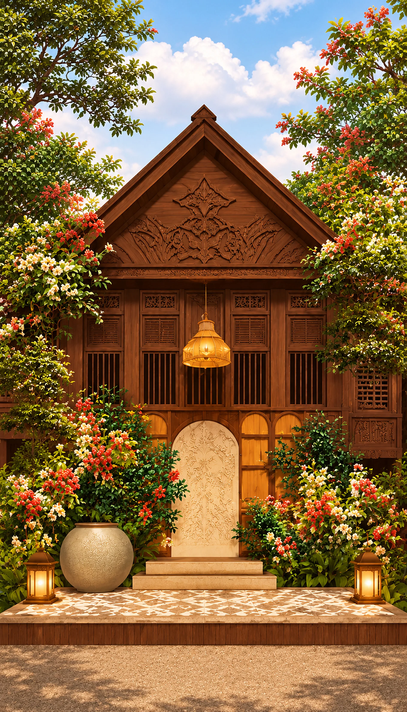
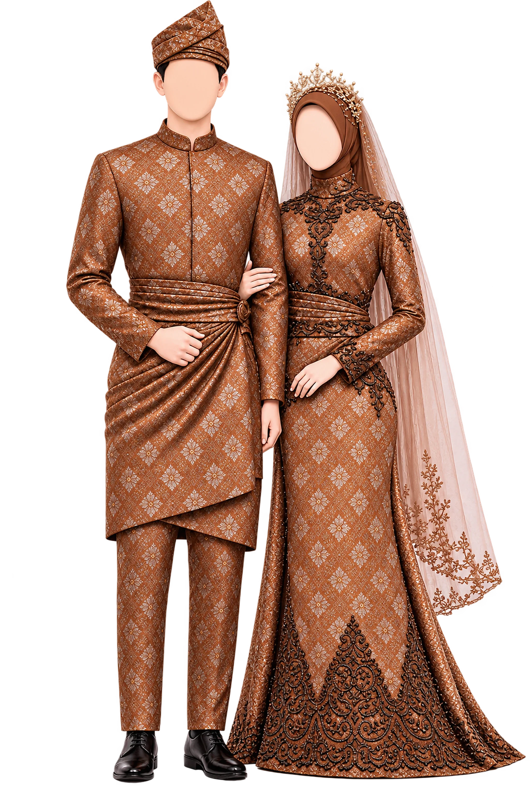
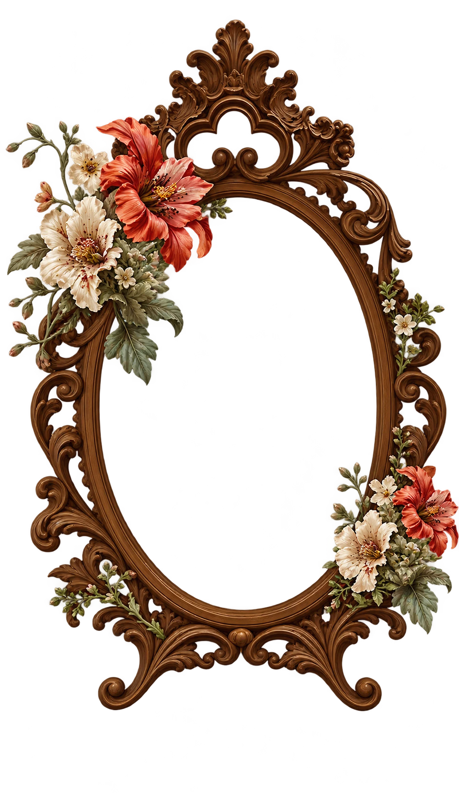

PadaSabtu23 Januari 202715 Syaaban 1448H
“Dan Kami ciptakan kamu berpasang-pasangan”
[An-Naba 78:9]
بَارَكَ ٱللَّٰهُ لَكُمَا وَبَارَكَ عَلَيْكُمَا وَجَمَعَ بَيْنَكُمَا فِي خَيْرٍAssalamualaikum & Salam Sejahtera
Dengan penuh kesyukuran ke hadrat Ilahi, kami
Rusli Nazir bin Othman
& Haliza binti Azizan
& Haliza binti Azizan
Menjemput setulus hati Dato’/Datin/Tuan/Puan/Encik/Cik & Sekeluarga ke Majlis Perkahwinan putera kami
Haikal Aimanbin Rusli Nazirputera kepada
Rusli Nazir bin Othman
Haliza binti Azizan
Haliza binti Azizan
Nur Allesya Irdinabinti Mohamad Yusofputeri kepada
Allahyarham Mohamad Yusof bin Zainol
Zarina binti Awang Kechik
Zarina binti Awang Kechik
MasaSabtu, 23 Januari 2027
15 Syaaban 1448H12:00 Tengah Hari – 5:00 Petang
15 Syaaban 1448H12:00 Tengah Hari – 5:00 Petang
Lokasi
Hubungi

MajlisBertaut Kasih
Skrol ke bawah
© 2026 ByLutfan. Hak Cipta Dilindungi.